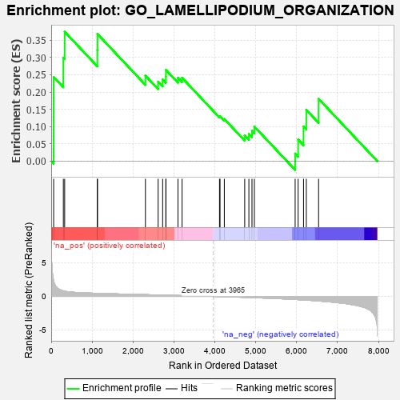
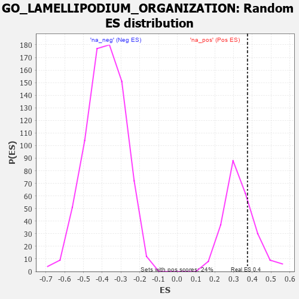

| | | Dataset | 7d |
| Phenotype | NoPhenotypeAvailable |
| Upregulated in class | na_pos |
| GeneSet | GO_LAMELLIPODIUM_ORGANIZATION |
| Enrichment Score (ES) | 0.3745473 |
| Normalized Enrichment Score (NES) | 1.1371092 |
| Nominal p-value | 0.25 |
| FDR q-value | 0.55300295 |
| FWER p-Value | 1.0 |
Table: GSEA Results Summary

Fig 1: Enrichment plot: GO_LAMELLIPODIUM_ORGANIZATION
Profile of the Running ES Score & Positions of GeneSet Members on the Rank Ordered List
| PROBE | GENE SYMBOL | GENE_TITLE | RANK IN GENE LIST | RANK METRIC SCORE | RUNNING ES | CORE ENRICHMENT | | 1 | RAC2 | | | 60 | 2.442 | 0.2435 | Yes |
| 2 | FSCN1 | | | 297 | 0.830 | 0.2991 | Yes |
| 3 | NUP85 | | | 329 | 0.772 | 0.3745 | Yes |
| 4 | SRC | | | 1128 | 0.459 | 0.3213 | No |
| 5 | NCK2 | | | 1131 | 0.458 | 0.3681 | No |
| 6 | WASF1 | | | 2303 | 0.259 | 0.2474 | No |
| 7 | VAV3 | | | 2614 | 0.210 | 0.2300 | No |
| 8 | SLIT2 | | | 2724 | 0.195 | 0.2363 | No |
| 9 | FER | | | 2803 | 0.183 | 0.2453 | No |
| 10 | BRK1 | | | 2805 | 0.183 | 0.2640 | No |
| 11 | RREB1 | | | 3099 | 0.137 | 0.2412 | No |
| 12 | TWF1 | | | 3199 | 0.123 | 0.2413 | No |
| 13 | MTOR | | | 4114 | -0.025 | 0.1289 | No |
| 14 | PLCE1 | | | 4127 | -0.028 | 0.1302 | No |
| 15 | ARPC2 | | | 4232 | -0.047 | 0.1220 | No |
| 16 | WASF3 | | | 4730 | -0.145 | 0.0744 | No |
| 17 | BIN3 | | | 4832 | -0.165 | 0.0786 | No |
| 18 | CAPZB | | | 4908 | -0.179 | 0.0876 | No |
| 19 | SNX2 | | | 4966 | -0.191 | 0.1001 | No |
| 20 | SH2B1 | | | 5963 | -0.459 | 0.0220 | No |
| 21 | RAC1 | | | 6036 | -0.484 | 0.0627 | No |
| 22 | PARVB | | | 6168 | -0.528 | 0.1005 | No |
| 23 | CDC42 | | | 6236 | -0.548 | 0.1484 | No |
| 24 | KANK1 | | | 6536 | -0.678 | 0.1805 | No |
Table: GSEA details [plain text format]

Fig 2: GO_LAMELLIPODIUM_ORGANIZATION: Random ES distribution
Gene set null distribution of ES for GO_LAMELLIPODIUM_ORGANIZATION